About Me
I am a Ph.D. candidate in Computer Science at the University of California San Diego, advised by ACM/IEEE Fellow Prof. Tajana Šimunić Rosing. My research focuses on multimodal AI & LLM agents, and efficient ML systems, aiming to build intelligent systems that can perceive, reason, and adapt in real-world environments.
My work is supported by the JUMP 2.0 centers CoCoSys and PRISM, and by the NSF AI Institute TILOS. Before UC San Diego, I earned my M.S. at the University of Science and Technology of China, advised by ACM/IEEE Fellow Prof. Xiang-Yang Li. I welcome research conversations and collaborations. You can reach me at yet002@ucsd.edu or find more details in my CV.
News 2026
- I passed my Ph.D. qualifying examination at UC San Diego.
- LifeAgentBench appeared in the main proceedings of EMNLP 2026.
- I gave an invited CoCoSys talk on efficient and adaptive learning for autonomous driving perception.
- HyperLiDAR was accepted to DAC 2026.
- I was invited to present a poster at the CoCoSys Annual Review.
Research Overview
My research aims to build intelligent systems that can perceive, reason, and adapt efficiently in real-world environments.

Selected Publications
An asterisk (*) denotes equal contribution. Full list on Google Scholar
Multimodal Understanding & LLM Agents

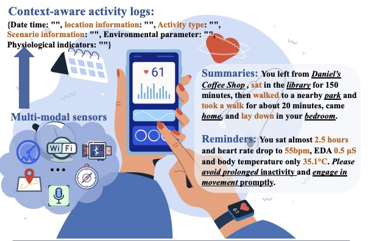

Fine-grained Contextualized Activity Logs Generation based on Multi-Modal Sensor Data and LLM
ACM SenSys 2025 · Poster


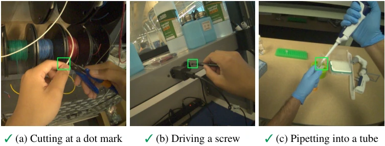
EgoPVA: When and Where Must We Look? Benchmarking Precise Visual Attention on Egocentric AI Glasses
CVPR 2027 (under review)
3D Perception & Spatial Reasoning

KROMA: Knowledge-Retaining Online Multimodal Adaptation for 3D Object Detection in Changing Driving Conditions
CVPR 2027 (under review)

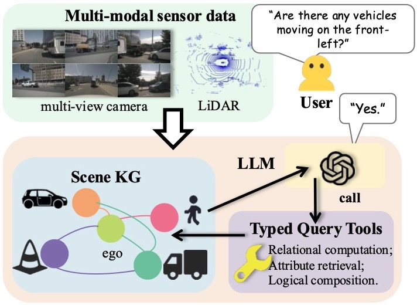
KLDrive: Fine-Grained 3D Scene Reasoning for Autonomous Driving based on Knowledge Graph
AAAI 2027 (under review)

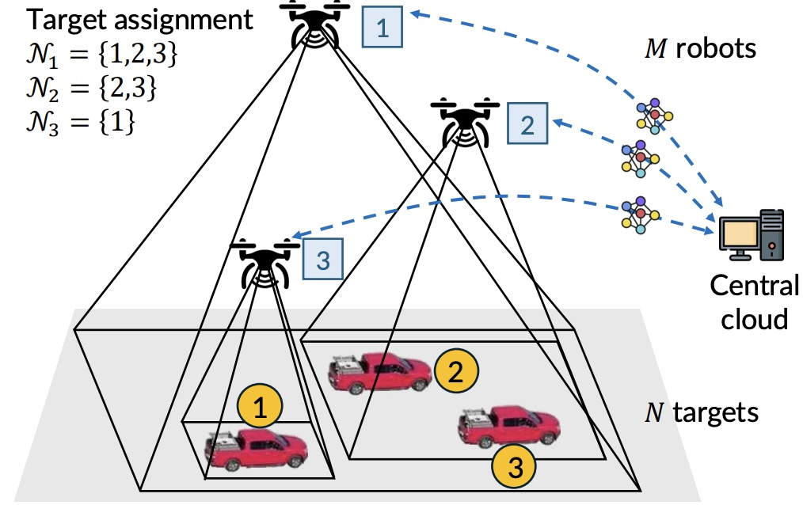
Efficient Learning & Inference Systems

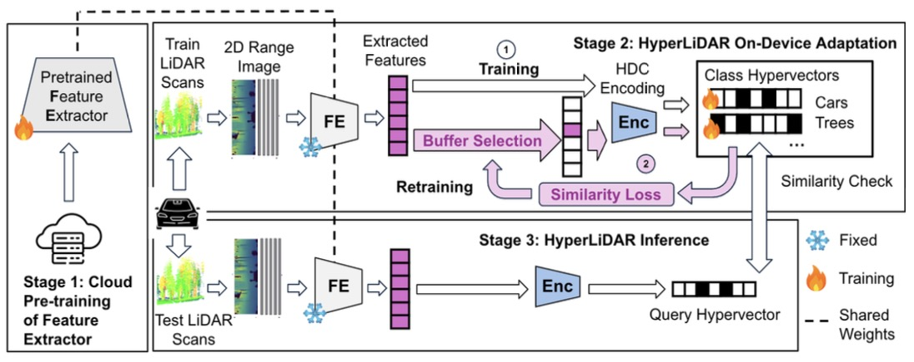

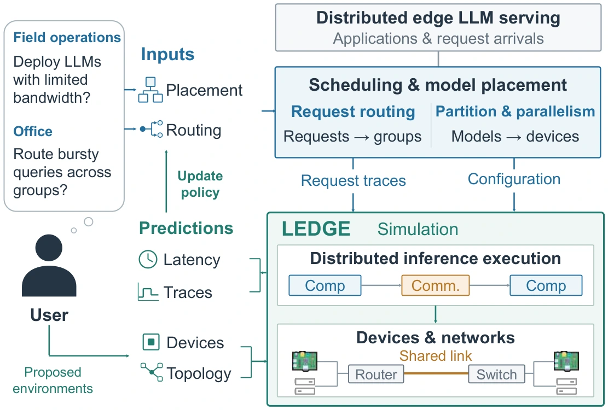
LEDGE: An Efficient Simulator for Distributed LLM Serving on Heterogeneous Edge Devices
SenSys 2027 (under review)

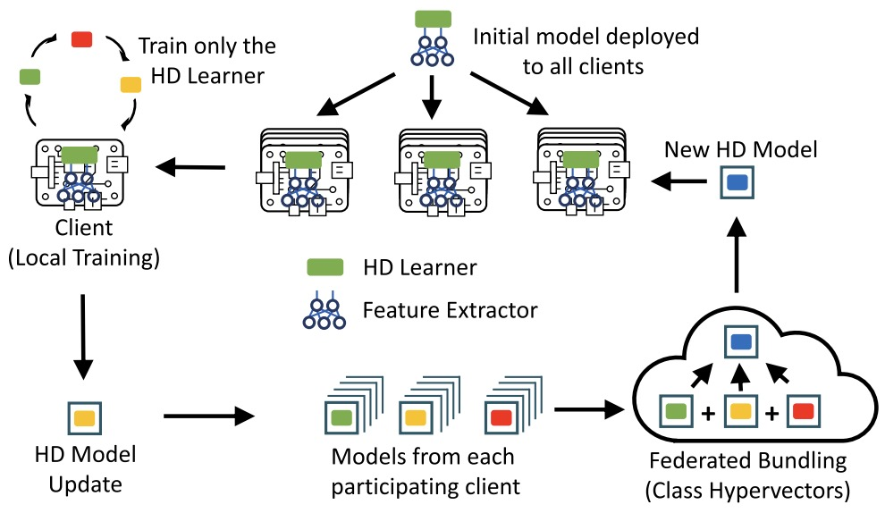
Federated Hyperdimensional Computing: Comprehensive Analysis and Robust Communication
ACM Transactions on Internet of Things · 2025

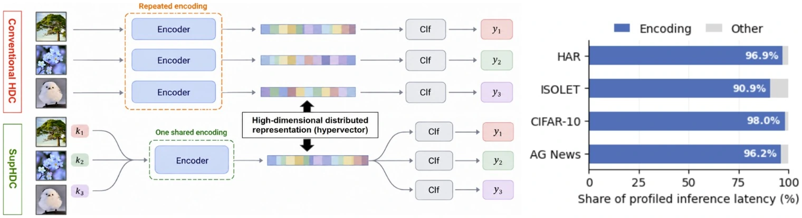

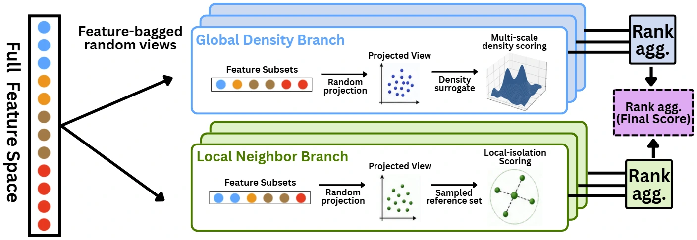
RGLD: Randomized Global-Local Density Estimation for Tabular Anomaly Detection
ICLR 2027 (under review)
Multimodal Sensing & Embedded Intelligence


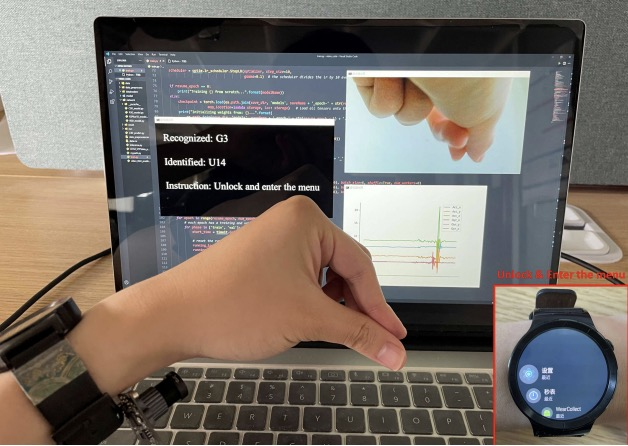


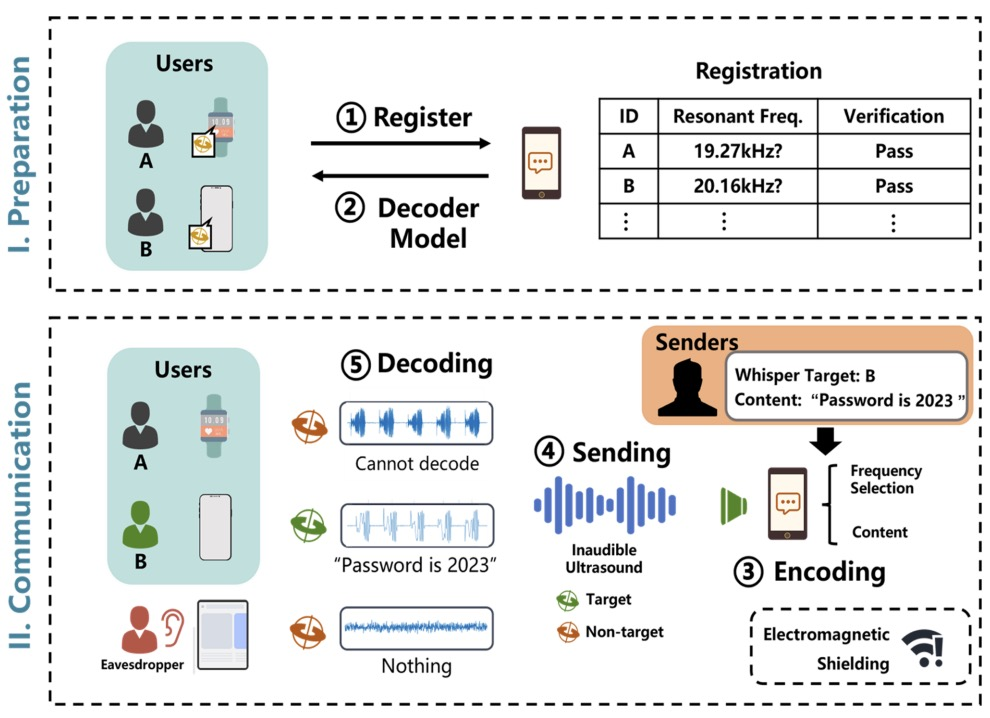
WordWhisper: Exploiting Real-Time, Hardware-Dependent IoT Communication Against Eavesdropping
IEEE Transactions on Mobile Computing · 2025
Selected Honors and Awards
Research Awards
- Best Poster Award, TILOS Industrial Day (2025)
- Top Ten Scientific Research Stars (2020)
Fellowships and Scholarships
- UCSD CSE Fellowship (2024)
- National Fellowship (2023)
- Lixin Tang Fellowship (2020)
- National Encouragement Fellowship (2018–2020)
- First Class Fellowship (2018–2020)
Academic Awards
- Outstanding Graduates of the University (2021)
- International Mathematical Contest in Modeling, Honorable Mention (2021)
- Forestry Innovation and Entrepreneurship Competition, National Semi-Finalist (2020)
- Outstanding Representative of Innovation and Entrepreneurship (2020)
- College Students Three Innovation Challenge, Provincial Second Prize (2019)
- Internet+ College Student Competition, Gold Award (2019)
Leadership and Service
- Outstanding Student Leader in Graduate Student Union (2022)
- Outstanding Students & Student Leader (2018–2020)
- Outstanding Representative of Social Practice (2018)
Academic Service and Leadership
Journal Reviewer
- ACM IMWUT
- Proceedings of the ACM on Interactive, Mobile, Wearable and Ubiquitous Technologies
- ACM TECS
- ACM Transactions on Embedded Computing Systems
- ACM TOIT
- ACM Transactions on Internet Technology
- ACM TOSN
- ACM Transactions on Sensor Networks
- IEEE THMS
- IEEE Transactions on Human-Machine Systems
- IEEE TNSE
- IEEE Transactions on Network Science and Engineering
- IEEE IoT-J
- IEEE Internet of Things Journal
- EAAI
- Engineering Applications of Artificial Intelligence
- JSTSP
- IEEE Journal of Selected Topics in Signal Processing
Conference Reviewer
- ICLR
- International Conference on Learning Representations
- AAAI
- AAAI Conference on Artificial Intelligence
- EMNLP
- Conference on Empirical Methods in Natural Language Processing
- ACM CHI
- ACM CHI Conference on Human Factors in Computing Systems
- IEEE VR
- IEEE Conference on Virtual Reality and 3D User Interfaces
Session Chair
- IEEE/ACM IWQoS
- IEEE BigCom
Research Mentorship
- UC San Diego ENLACE Summer Research ProgramResearch Mentor
Miscellaneous
I enjoy reading about ancient civilizations and watching historical documentaries. I am fascinated by classical art across both Chinese and Western traditions, especially Romanesque, Gothic, Renaissance, Baroque, and Rococo works. I also love music, hiking, and photography, as well as wandering through new cities in search of hidden corners, savoring good food, and taking in new scenery. At home, I also enjoy cooking.